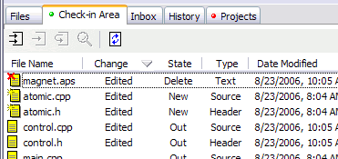
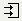

Check-in Area Tab
This is where all the checked-out, deleted and new files go before being checked-in. You can sort the files by any of the fields: Name, Change, State, Type, Date, Path, or ID.

Double-clicking on a file in this area will open the differ to
display the differences between the current state of the file and the state from before the check-out. It will show you the changes you've made so far to the file. If the file has not changed since being checked out, the Code Co-op editor will launch instead of the differ.
- The first button, "check-in all", is the most used one.
- The second button is used when you want to do a partial check-in. You can select specific files by holding the Ctrl key and clicking on specific files.
- The third button let's you Un-CheckOut a file which undos all the edits you've made since the check-out.
 The next button will open selected files in your differ.
The next button will open selected files in your differ. - The last button, "refresh", updates the "changed" column which marks the files that have been changed since the checkout. By the way, by clicking on the header of the "changed" column you can sort files by the "changed" attribute.